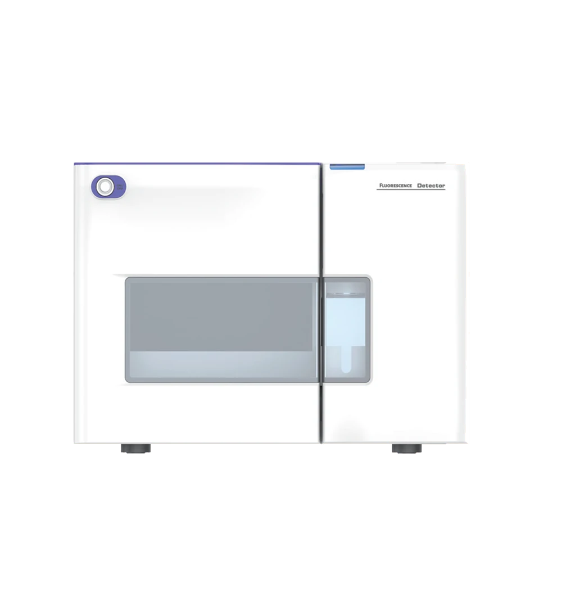

D50 vs D51
| Parameter | D50 | D51 |
|---|---|---|
| Wavelength range | EX: 200–750 nm / EM: 200–750 nm | EX: 200–900 nm / EM: 200–900 nm |
| Light source | Xenon Lamp (DC) | Xenon Lamp (DC) |
| Spectral bandwidth | 20 nm | 20 nm |
| Wavelength accuracy | ±2 nm | ±2 nm |
| Wavelength precision | ±0.2 nm | ±0.2 nm |
| Water Raman peak S/N | 1200 : 1 | 1200 : 1 |
| Dynamic noise | ≤5×10⁻⁴ FU | ≤5×10⁻⁴ FU |
| Dynamic drift | ≤5×10⁻³ FU/h | ≤5×10⁻³ FU/h |
| Linear range | >10⁵ (JJG) | >10⁵ (JJG) |
| Maximum sampling rate | 100 Hz | 100 Hz |
| Flow cell | 12 µL; 2 MPa (290 PSI) | 12 µL; 2 MPa (290 PSI) |
| Minimum detection concentration | 2×10⁻¹⁰ g/mL (Na) | 2×10⁻¹⁰ g/mL (Na) |
| Weight | 24 Kg | 24 Kg |
| Dimensions | 550(D)×400(W)×280(H) mm | 550(D)×400(W)×280(H) mm |
| Power supply | 100–240 VAC, 50/60 Hz, 300 W max | 100–240 VAC, 50/60 Hz, 300 W max |